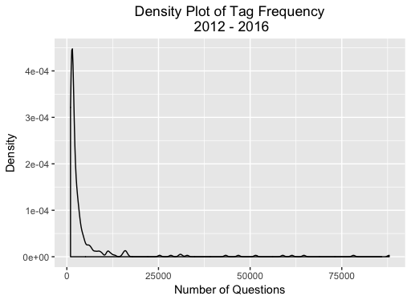
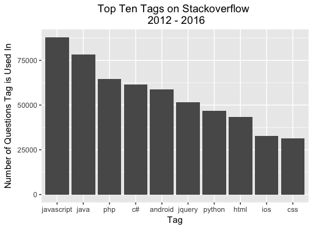
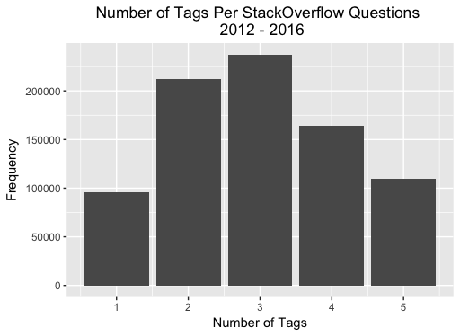
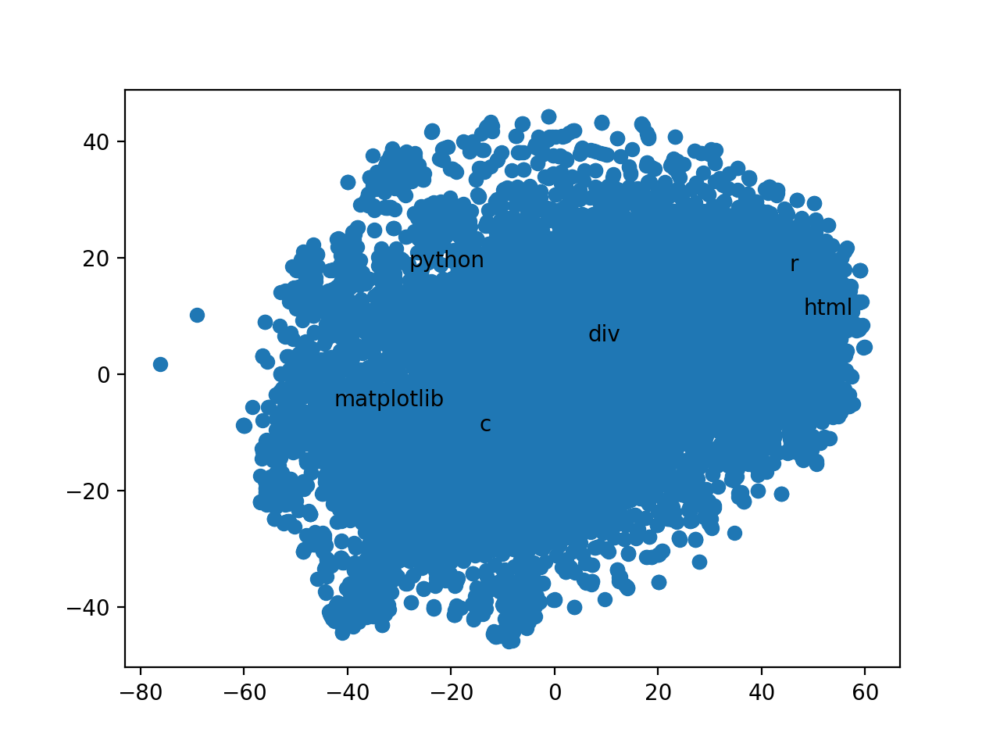
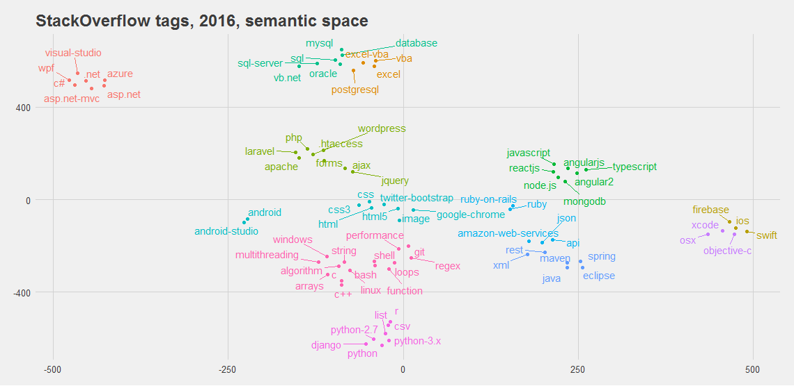
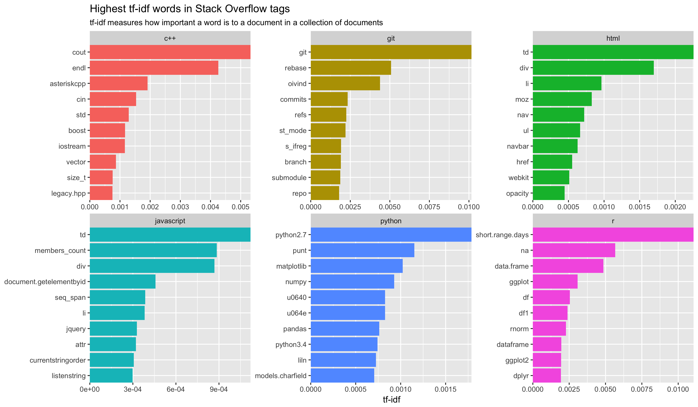
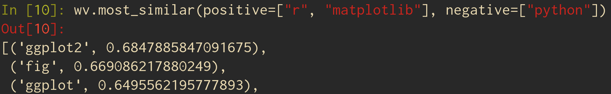

### Building a Bot to Help You Code Mac Gray, David Duffrin, and Shane Caldwell
### Documentation is slow - Switching tabs to find documentation is slow - We only want a small piece of what is presented to us (TLDR) - Searching takes time - Too easy to type in "Youtube.com"
### What we want A bot that can help us find answers to our questions - Using an interface we already like - Succinctly - Without falling into the rabbit hole that is the internet.
### The Data - Kaggle's StackOverflow dataset - From 2009 to 2016 - Over 42,000,000 questions and their answers.
### The Munge - Clean HTML tags from the QAs ```R cleanHTML <- function(htmlString) { return(gsub("<.*?>", "", htmlString)) }```
### What's relevant? - Data Science moves pretty fast - Old Data Science techniques kind of get left in the dust - We want to start at 2012 - 2016 - We're pretty sure everything before that is Java, C# and other... undesirables
Density plot
What's tag distribution look like

What tags are used most often?
The answers... won't surprise you

Average tags per post
Number of tags actually shows a normal distribution.

### Can we draw conclusions on what makes a good answer? - Is there an association between score and length? - Created linear regression using length of question to predict score. - R^2 was around a .12 so uh... - Friends don't let friends do NLP with linear regression ### Never again
### The Tech - keras - Word2Vec/Doc2Vec - gensim
<h3>t-SNE Attempt</h3> 
<h3>How t-SNE should look</h3> 
<h3>TF-IDF</h3> 
### The Results - Weird plots (t-SNE) - Synonyms (Cosine Difference) - Analogies (Parallel Vectors)
<h3>Cherrypicked Analogy</h3> 
### Rybot - Doc2Vec - Fighter AND a Lover - Let's you relax while you wait for the answer
### The End - We Done - Questions?